Take the initiative again even when you already have it: every new take advances your dungeon. Rilsa does not need to attack herself to boost an attacker, so keeping her back to defend the initiative is often better than risking her in combat.
Optimized Bracket 3 for ratdos. The three Game Changers are Rhystic Study, Demonic Tutor and Cyclonic Rift. The deck builds resources through initiative and blink, then wins with dungeon loops or empowered evasive attackers. Its combo engines wait until turn 6 under the house rules.
Complete the first dungeon
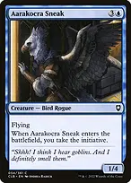
Aarakocra Sneak

a four-mana initiative entry that can defend against flyers or attack over ground blockers. Blink it when Rilsa is unavailable; you do not need the commander to advance through the dungeon.
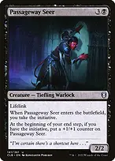
Passageway Seer
takes the initiative and grows at your end step while you retain it. Rilsa's power boost turns its lifelink into a meaningful recovery tool after paying life to lands, tutors or Toxic Deluge.
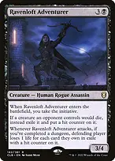
Ravenloft Adventurertakes the initiative while replacing opposing creature deaths with exile. Its attack drain counts only the relevant hit-counter cards. This can deny future opposing creatures to Reanimate, but leaves your own graveyard available.
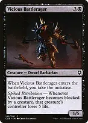
Vicious Battleragera sturdy initiative body. After dungeon completion, Rilsa's menace forces at least two blockers, and each blocker causes its controller to lose five life. Those losses happen from blocking, not from dealing combat damage.
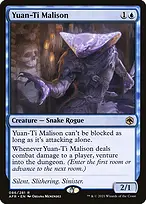
Yuan-Ti Malison
attack alone to keep it unblockable, recover stolen initiative and venture on combat damage. Rilsa can remain untapped and still buff it. Attacking with another creature turns off Malison's evasion.
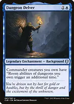
+
Dungeon Delver + Rilsa Rael, Kingpindoubles room abilities while your commander is on the battlefield, increasing the rewards of each room rather than moving you an extra room. This Background is in the ninety-nine; Rilsa cannot use it as a second commander.
Initiative starts Undercity only when you are not already in a dungeon. If you are already exploring another dungeon, it advances that one. Ordinary venture can advance an existing Undercity but cannot start a new Undercity. Losing the initiative does not erase progress, and completing any dungeon permanently enables Rilsa's upgraded attack trigger for that game.
Undercity's usual resource route is Secret Entrance, Forge, Trap!, Archives, Throne of the Dead Three. Choose the Treasure route when mana matters more than counters or Trap's five life loss. Secret Entrance finds a basic into your hand, not onto the battlefield; Throne looks at ten cards and can deploy a creature, not any permanent.
Dungeon rules reference: https://magic.wizards.com/en/news/feature/commander-legends-battle-for-baldurs-gate-mechanics
Repeat your best entries
 +
+Displacer Kitten + Rilsa Rael, Kingpineach noncreature spell can blink Rilsa and take the initiative again. The blink trigger resolves before that spell. Kitten does not trigger from creature spells, including Acererak, and can target only your own nonland permanents.
 +
+Thassa, Deep-Dwelling + Rilsa Rael, Kingpina repeatable end-step initiative entry that leaves Rilsa ready to block. Thassa's blink works even while she is not a creature. You can instead blink a tutor or draw creature when those resources matter more.

Essence Fluxa one-mana immediate blink for protection or another initiative trigger. It does not save a creature from a sweeper that is still on the stack, because the creature returns immediately.
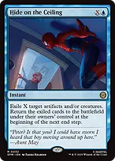
Hide on the Ceiling
exile several artifacts or creatures to protect your board from a sweeper, or temporarily remove opposing blockers. They return at the next end step, not immediately. Cast after an end step has begun to keep them away until the following end step. This spell can also reset a used Emeritus of Woe.
 +
+Emeritus of Woe // Demonic Tutor + Displacer Kittencast the prepared Demonic Tutor copy for 1B at sorcery speed. That noncreature cast triggers Kitten, which can blink Emeritus so it returns prepared again. Each additional tutor still costs 1B; this is repeatable tutoring with mana, not a free loop. Thassa can also refresh it on your end step.
The dungeon finishes
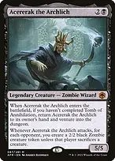
+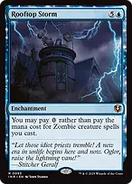
Acererak the Archlich + Rooftop Stormif you have never completed Tomb of Annihilation, cast Acererak for zero, return him to hand with his entry trigger, and venture. Repeat through Lost Mine of Phandelver, choosing Mine Tunnels and Dark Pool to make Treasures and drain each opponent. Finish an existing dungeon first. Do not complete Tomb of Annihilation: doing so permanently switches off Acererak's return trigger for this game.
Lost Mine ends with a mandatory card draw, so the two-card loop is bounded by your remaining library. Count remaining cards against opponents' life totals before starting. It usually wins from normal life totals with a healthy library, but do not declare unlimited repetitions while ignoring the draw. Use its Treasures and draws to assemble the safer finishes below if required.
 ++
++Bontu's Monument + Acererak the Archlich + Rooftop StormMonument drains every opponent on each creature cast, rather than once per dungeon lap, substantially reducing the number of mandatory draws needed. Its generic reduction alone cannot make Acererak free: the black mana symbol remains without Storm. Blink effects do not count as casting and do not trigger Monument.
 +
+
Deadeye Navigator + Peregrine Drakepair the creatures, tap lands for mana, pay 1U to blink Drake, and untap up to five lands. Re-pair them when Drake returns and repeat. Your reusable lands must produce more than two mana total, including blue each time; ordinary untapped lands meet this with three or more. With five ordinary lands, each cycle nets three mana.
Deadeye Navigator + Peregrine Drake + Rilsa Rael, Kingpinfirst float enough mana for the entire finish. Blink Deadeye using its own granted ability and pair it with Rilsa instead. Repeatedly blink Rilsa, re-pairing on each return, to complete Undercity over and over and use Trap! to make opponents lose life. Trap leads to Archives, so use instant-speed sequencing to avoid decking: in response to the Archives draw trigger, blink Rilsa again to advance to Throne; with the Throne trigger still pending, blink her again to leave that dungeon and start another. Keep the earlier draw and Throne triggers on the stack while resolving the newly created Trap triggers above them, until every opponent is eliminated. Do not let those pending draws resolve if your library cannot support them.
Ghostly Flicker + Archaeomancer + Peregrine Drakeblink the two creatures, untap lands and return Flicker to hand. With five lands producing at least five mana, each three-mana Flicker nets at least two mana. After floating sufficient mana, switch the Flicker targets to Archaeomancer and an initiative creature; recurring Flicker then repeats initiative entries for the same Undercity Trap! finish. Order Archaeomancer's recovery above the initiative trigger so Flicker is back in hand before the room trigger appears. As in the Deadeye line, recast Flicker in response to Archives and Throne triggers to keep advancing without resolving mandatory draws.
Rilsa is not essential to those initiative kills: Aarakocra Sneak, Passageway Seer, Ravenloft Adventurer or Vicious Battlerager can replace her as the repeatable initiative entry. Deadeye's soulbond trigger can be answered before the pair reforms, so the loop still offers removal windows. Graveyard exile breaks the Archaeomancer line; it does not break the Deadeye line.
Dungeon route and Acererak reference: https://magic.wizards.com/en/news/feature/adventures-forgotten-realms-release-notes-2021-07-09
Find what the board is missing
 →
→Demonic Tutor → Rooftop Stormwhen Acererak is available, fetch the six-mana enchantment. With Storm already available, reverse the search and fetch Acererak. Save mana for protection instead of treating the tutor as the entire cost of the win.
 →
→Grim Tutor → Deadeye Navigatorfind the missing blink engine when Drake is ready. The same unrestricted search finds Peregrine Drake when Deadeye is established; the three life matters after other life payments.
 →
→Diabolic Intent → Rooftop Stormtrade a spent entry creature for the missing finish. Baleful Strix or an extra initiative creature is a sensible sacrifice; losing the only initiative blocker can give opponents a free attack. The sacrifice is paid even if Intent is countered.
→ Emeritus of Woe // Demonic Tutor → Peregrine Drakeits prepared spell finds the missing mana engine; blink Emeritus to prepare another search later. The initial creature plus prepared spell costs six mana total, so it is an engine for developed boards rather than a two-mana tutor from hand.
 →
→Wishclaw Talisman → Acererak the Archlichuse the tutor when you intend to finish immediately, since an opponent receives the Talisman after your search. Do not casually give an opponent a tutor just to improve an otherwise ordinary hand.
 →
→Drift of Phantasms → Acererak the Archlichtransmute for the three-mana creature without exposing a spell to ordinary counterspells. Other three-mana targets include Ghostly Flicker and Bontu's Monument. Drift can block flyers if you must cast it, but defender prevents it from becoming a Rilsa attacker.
 →
→Muddle the Mixture → Demonic Tutortransmute for the broad tutor when you need access to either six-mana combo piece. It can also find Wishclaw Talisman, Diabolic Intent or Animate Dead directly. Keep it as an instant counterspell when stopping a win matters more.
 →
→Spellseeker → Demonic Tutorcreates a blinkable route to any missing engine card. Alternatively find Essence Flux to protect a creature, Reanimate to recover one, or a cheap counterspell to defend the winning turn. Spellseeker cannot fetch the three-mana Ghostly Flicker.
Keep cards and mana coming
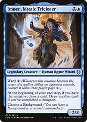
Imoen, Mystic Trickster
draws at your end step while you have the initiative, and draws a second card after dungeon completion. If you lost the initiative before the end step began, blinking Rilsa during that end step does not retroactively create Imoen's trigger; regain initiative beforehand when possible.
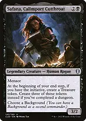
Safana, Calimport Cutthroatproduces one Treasure at your end step with initiative, upgraded to three after dungeon completion. This pays for six-mana engines and protection together. Like Imoen, she must see you holding the initiative as the end step starts and when her trigger resolves.
 +
+
Rhystic Study + Mystic Remoradraw independently of holding initiative, so a stolen dungeon engine does not leave you without resources. Drop Remora's cumulative upkeep when paying it would delay your board or prevent interaction.
Sol Ring + Arcane Signet + Talisman of Dominancethe early acceleration that makes a four-mana initiative play or five-mana commander arrive before the table has overwhelming defenses. Signet and Talisman supply the colored mana your high-cost blue combo creatures require.
 +
+
Dimir Signet + Fellwar Stoneadditional two-mana fixing. Dimir Signet requires another mana source to activate; Fellwar Stone's colors depend on opposing lands. Do not count it as guaranteed blue or black before checking the table.
 +
+
Mind Stone + Thought Vesselgeneric acceleration toward the engines. Mind Stone becomes a card when mana is plentiful; Vessel's hand-size bonus is secondary to making mana. Neither supplies the blue required for Deadeye activations.

Sarevok's Tome
takes initiative on entry and taps for two colorless while you retain it. Kitten can blink the Tome for both another initiative entry and an untapped rock. Its post-dungeon three-mana activation offers a free nonland spell, but is uncertain and consumes the Tome's tap; use it for value when you are not already assembling a known finish.

Dark Ritualconverts one black mana into three for an early initiative creature or a turn with both development and protection. It supplies no blue, so it cannot by itself fund a Deadeye activation or blue counterspell.
Combat, protection and rebuilding
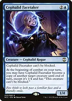
Cephalid Facetakeran unblockable attacker that becomes six power with Rilsa after dungeon completion, before other bonuses. It can copy a useful nonlegendary creature's abilities before combat while staying 1/4 and unblockable; copying a legendary creature you already control risks the legend rule. Becoming a copy does not trigger entry abilities.

Lightning Greaveshaste lets a freshly played Rilsa attack, and shroud protects important creatures. Shroud also prevents your own blink spells, Kitten targeting and Rilsa's targeted attack boost. Move the Equipment before those targeted effects; Deadeye's granted self-blink does not target.
 +
+
Toxic Deluge + Sheoldred's EdictDeluge resets an overwhelming creature board, including your own creatures, and bypasses indestructible through toughness reduction. Edict hits each opponent without targeting but lets them choose their sacrifice within the chosen mode. Preserve a recovery plan before sweeping your initiative defense.
Feed the Swarm + Deadly Rollick + PongifySwarm reaches enchantments that block your blink or creature abilities; it is a sorcery and costs life. Rollick exiles a creature for free only while you control Rilsa. Pongify is cheap but leaves a 3/3 that can attack for initiative.
Mana Drain + Counterspell + Muddle the Mixtureprotect the engine or stop another player's win. Drain's delayed mana is colorless, useful for six-mana setup but not your blue requirements. Muddle counters only instants and sorceries, not every spell.
Swan Song + Flusterstorm + An Offer You Can't Refuseone-mana protection lets you commit a six-mana piece with a useful answer left up. Their coverage differs: Song covers enchantments, instants and sorceries; Flusterstorm is a payable tax on an instant or sorcery; Offer stops a noncreature spell but gives its controller two Treasures.
 +
+
Pact of Negation + Force of NegationPact is a final-turn shield only if you can win or pay 3UU next upkeep. Force's pitch mode works only on another player's turn, so keep three mana if you need it on your own combo turn. Both have costs that matter when the attempt is disrupted.
 +
+
Chain of Vapor + Sink into Stupor // Soporific Springsbounce an obstacle at the critical moment. Chain lets the affected permanent's controller sacrifice a land to copy it, possibly bouncing your engine in return. Sink can also return an opposing spell to hand; its land face is valuable when the opening hand needs blue mana more than interaction.
 +
+
Reanimate + Animate Deadrecover a removed combo creature or a useful entry creature. Reanimate costs life equal to mana value. Blinking a creature returned by Animate Dead causes the Aura to fall off; the returned creature is a new object and survives the old Aura's sacrifice instruction. This frees it from the Aura dependency.

Malakir Rebirth // Malakir Mireprotects against death, then returns the creature tapped for another entry trigger. It does not protect against exile or bounce. If using it on Rilsa, leave her in the graveyard so the return can work instead of moving her to the command zone. Play the tapped land face early when needed to make land drops.
Opening hands and sequencing
Keep three mana sources, a two-mana rock, and an initiative creature or draw engine with interaction. Two lands plus a reliable rock and cheap draw is reasonable; a hand whose only plan is six-mana combo pieces is not. The list has 35 lands plus two spell/land MDFCs. Three Islands and three Swamps give repeated Undercity entries actual basic targets; the dual-heavy remainder supports early UB and later UU or BB.
Fetch Underground Sea, Watery Grave or Undercity Sewers according to whether you need mana immediately. Sewers is always tapped; Clearwater Pathway fixes only its chosen face. Reflecting Pool needs another land's available mana types, and Gemstone Caverns is only colorless without its opening-hand luck counter. Phyrexian Tower can convert an expendable entry creature into BB, but losing a defender may cost initiative.
Develop mana and card draw on turns 1-3, then take initiative with a defended board. Keep Rilsa back when a deathtouch blocker matters more than seven damage. Complete a dungeon, convert Imoen and Safana into sustained resources, and use spare mana for tutors rather than casting every creature in hand.
At the end step, decide whether Thassa should advance the dungeon or reset Emeritus. Imoen and Safana trigger only if you already hold initiative as that step begins. If their triggers exist, you can order Thassa's blink above them to finish the dungeon before their triggers resolve, earning the upgraded payout. With multiple initiative triggers, resolve the room effects carefully rather than skipping dungeon choices.
Do not use the two-card engines before turn 6: Acererak plus Rooftop Storm, or Deadeye Navigator plus Peregrine Drake. The three-card Flicker engine is likewise reserved for the finishing stage. Before then, ramp, develop initiative value and defend against other wins. A good supported draw threatens around turns 6-8; five- and six-mana setup pieces and removal windows keep this in tier A despite its tutor density.
For a win attempt, count colored mana, locate the relevant answer, and choose the line that fits the board. Use Acererak when creature abilities or graveyard recursion are constrained; use Deadeye when repeated spellcasting is constrained, provided creature abilities and entries still work. If interaction breaks the first attempt, recover a piece and keep the initiative engine operating instead of spending the last card on an unsupported second attempt.